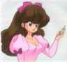

I Personaggi - La Coppia d'Oro
|
I Personaggi - La Coppia d'Oro |
Non sono una famiglia, ma gareggiano e combattono sempre insieme in quello che viene chiamato "Pattinaggio Artistico Marziale".
| Shiratori Azusa |  |
È la graziosa parte femminile della "Coppia d'Oro" del Koru Hosei Gakuen. Azusa è affetta da una strana forma di cleptomania: quando vede qualcosa che le piace, le dà un nome Francese (!) e cerca di prenderselo in tutti i modi; se una persona tiene l'oggetto in questione, comincia a colpirla sulla testa con qualcosa finché non riesce a strapparglielo. Quando trova P-Chan, se lo prende e lo chiama "Charlotte": da qui nascerà la sfida Azusa-Mikado vs Akane-Ranma che avrà come premio proprio il porcellino nero. Mitica quando si appropria di Genma-Panda, lo chiama Oscar e lo traveste da Lady Oscar!!!
Apparizione: Nettohen episodio 7. Volume 2 parte 6.
Significato del Nome: Shiratori significa "Uccello Bianco". Azusa significa "Albero di Catalpa"
| Sanzenin Mikado |  |
È l'affascinante e presuntuoso playboy della situazione, che fa coppia nel pattinaggio con Azusa. La sua tattica preferita durante i combattimenti, è quella di cercare in ogni modo di baciare la ragazza della coppia avversaria, e infatti non pensa praticamente ad altro. È odiato profondamente da Ranma, perché un giorno è riuscito a baciare Ranma-chan sulla bocca, mandando in frantumi il suo orgoglio: infatti Ranma (nonostante non sappia neanche reggersi in piedi sui pattini) decide di fare coppia con Akane nella sfida, non per il premio (P-Chan) ma per vendicarsi dell'umiliazione.
Apparizione: Nettohen episodio 7. Volume 2 parte 6.
Significato del Nome: Sanzenin significa "3000 Palazzi" e Mikado significa "Imperatore"
<<-RITORNA ALL'INDICE DEI PERSONAGGI
| Grafica, impaginazione e testi sono (c) di Francesco "Nibunnoichi" Giordano e non possono essere usati senza il consenso dell'autore. |